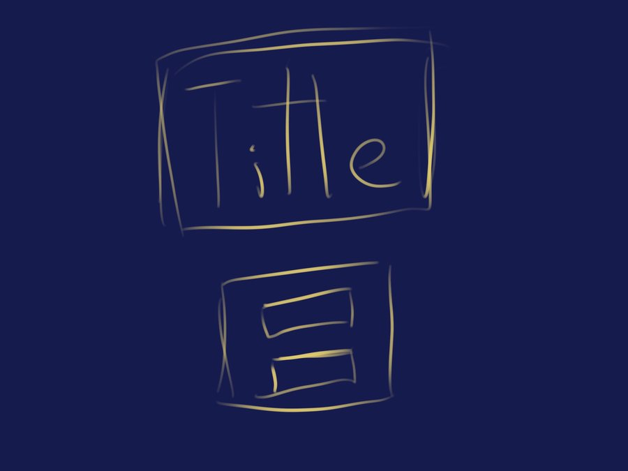
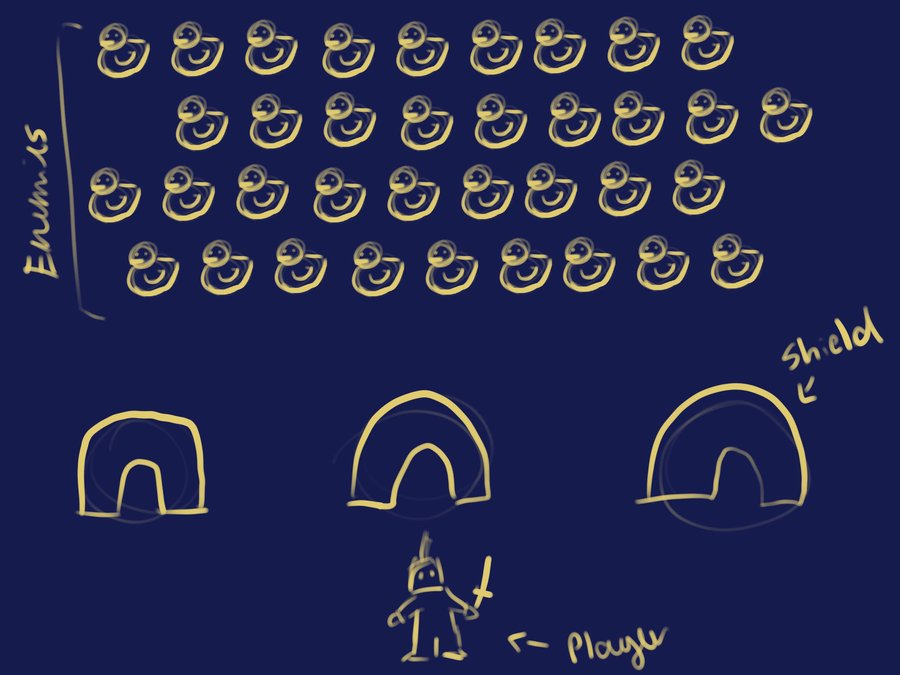
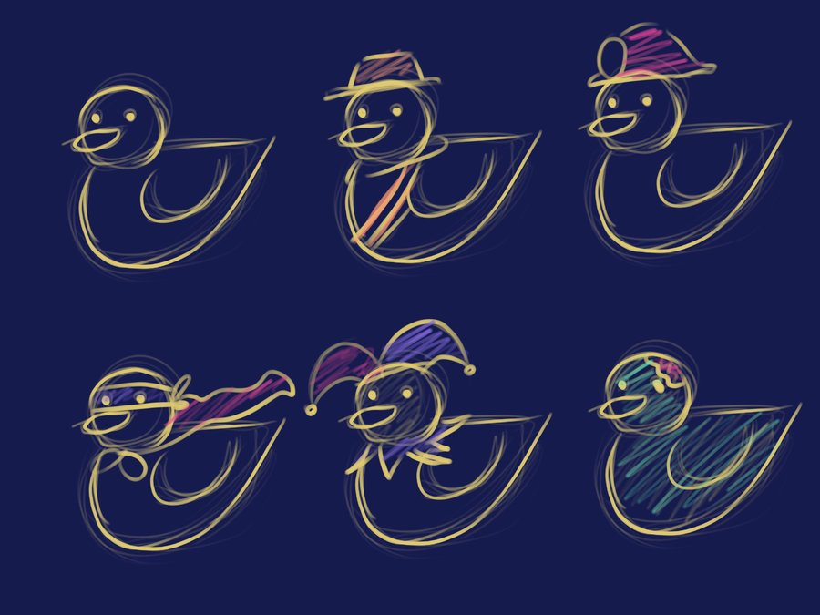
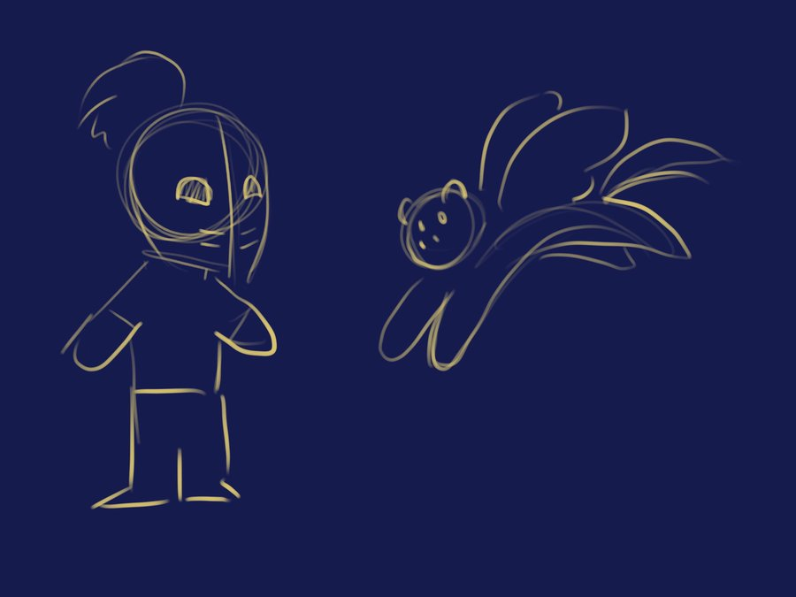
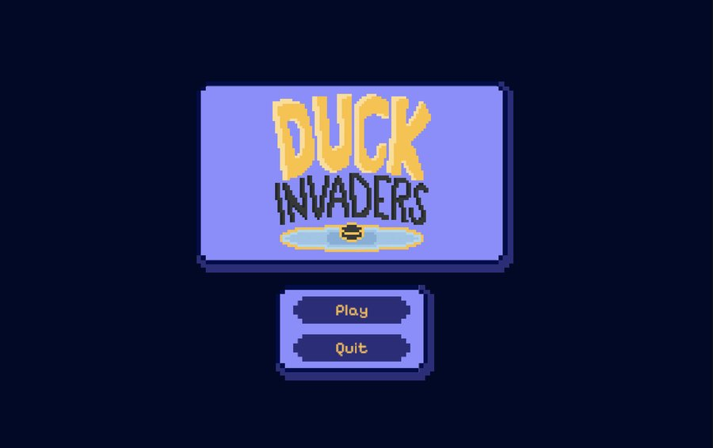

Duck Invaders
A Space Invaders-style fixed shooter where a knight shoots upward at waves of invading ducks while sheltering behind shields.
- Course
- Game Production
- Role
- UX/UI designer
- Status
- Completed
- Play
- itch.io page
- Team
- 5 people
- Tools
- Unity (engine), Piskel (pixel art)
Goal
Destroy every invading duck before the formation reaches the bottom of the screen, survive as long as possible, and chase a high score. Each new level raises the difficulty through enemy speed and fire rate.
What I did
- Designed the game's UX/UI.
- Created menu, gameplay HUD and end-screen layouts, from sketches and wireframes through Unity scene integration.
Design analysis
The team's game analysis document used the 1978 arcade game Space Invaders as the reference. It classifies Duck Invaders as a fixed shooter: the player moves along one axis, enemies advance in formation, and difficulty rises over time. It lays out the rules, resources (limited lives and shields that wear down), and boundaries. It also rates the game against the 8 Kinds of Fun, where it scores strongest on Challenge and Submission, with a light fantasy layer from the knight-versus-ducks theme.
Concept sketches




Final screens



What I learned
This project reinforced the importance of reviewing interface clarity and coordinating art and implementation throughout development.